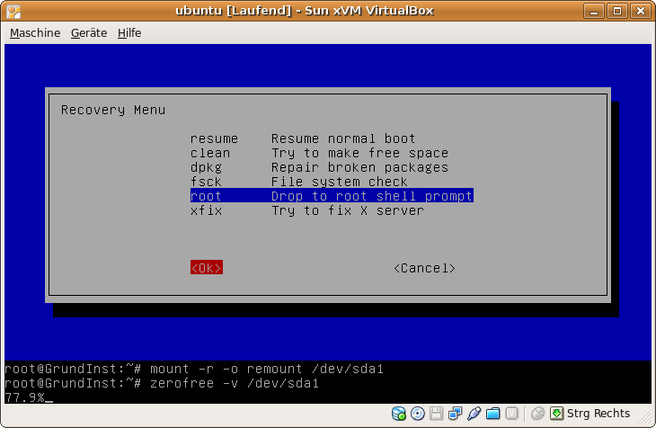

Problembehebung
Zum Verständnis dieses Artikels sind folgende Seiten hilfreich:
- Hostsystem
- VDI-Images auf USB-Platten/Sticks werden...
- Alte Version installieren
- Kein Start mehr nach Kernelupdate
- Kein Start der Maschinen nach Upgrade au...
- Kein Start der Maschinen nach Installati...
- Tastatur funktioniert in den VMs nicht m...
- Problembehebung USB-Proxy-Service
- USB-Geräte können nicht eingebunden werd...
- USB 3.0 - Unterstützung
- USB-Geräte sind "ausgegraut"
- VirtualBox OSE startet nach Hinzufügen d...
- Die virtuelle Maschine ist "inaccessible...
- Gastsysteme
- 64-Bit Systeme als virtuelle Maschine
- CD/DVD-Laufwerk wird nicht erkannt
- CD/DVD-Brenner nutzen
- Windows bootet nach Änderung der VM-Konf...
- Netzwerkkarte wird unter Windows Vista n...
- Linux-Gastsystem bootet nicht
- Grafische Oberfläche startet nach Update...
- Grafiktreiber der Gasterweiterungen akti...
- Kein echtes Vollbild beim Start
- Mauszeiger unsichtbar
- Multimedia-Tasten werden nicht "gefangen...
- ActiveSync 4.5 findet Pocket PC mit WM5 ...
- Windows Vista Installation bricht ab
- Komprimierung des Images der virtuellen ...
- DirectX Wrapper (experimentell)
- nur Farbstreifen beim Start von LiveCD
- Links
Auf dieser Seite werden verschiedene, bekannte Probleme von VirtualBox und deren mögliche Lösungen beschrieben. Die Probleme müssen dabei nicht unbedingt auf alle Versionen von VirtualBox zutreffen bzw. auf alle möglichen Host-/Gastkombination. Wo ein Problem versionsspezifisch bzw. host-/gastspezifisch ist, wird dies explizit erwähnt.
Hostsystem¶
VDI-Images auf USB-Platten/Sticks werden nicht gefunden¶
Erhält man eine Fehlermeldung, dass die auf Wechseldatenträgern (USB-Platten oder -Sticks) gelagerten VDI-Images nicht gefunden werden können, liegt das daran, dass Ubuntu ab Version 12.10 ein anderes Verzeichnis zum Einbinden selbiger verwendet (siehe /run/media is an unnecessary divergence from the FHS).
Bis Ubuntu 12.04 LTS wurden Wechseldatenträger unter /media/Bezeichnung_des_Wechseldatenträgers/image.vdi eingebunden. Ab Ubuntu 12.10 ändert sich der Einhängepunkt von Wechseldatenträgern auf /media/$USER/Bezeichnung_des_Wechseldatenträgers/image.vdi.
Logischerweise kann VirtualBox nun das VDI-Image nicht mehr finden und gibt eine Fehlermeldung aus. Möchte man VB nun den neuen Ort des Images bekannt machen, erhält man folgende (ähnliche) Fehlermeldung:
Failed to open the hard disk /media/Benutzername/Bezeichnung_des_Wechseldatenträgers/image.vdi.
Cannot register the hard disk '/media/Benutzername/Bezeichnung_des_Wechseldatenträgers/image.vdi'
{UUID-Nummer} because a hard disk '/media/Bezeichnung_des_Wechseldatenträgers/image.vdi'
with UUID {UUID-Nummer} already exists.
Result Code: NS_ERROR_INVALID_ARG (0x80070057)
Component: VirtualBox
Interface: IVirtualBox {UUID-Nummer}Um das Problem zu lösen, vergibt man dem VDI-Image eine neue UUID-Nummer. Dies geschieht durch folgenden Befehl im Terminal [3] :
VBoxManage internalcommands sethduuid /media/$USER/Bezeichnung_des_Wechseldatenträgers/image.vdi
Danach kann man das alte Image aus VirtualBox entfernen und das neue in Betrieb bekanntmachen.
Alte Version installieren¶
Ältere Versionen von VirtualBox, die man auf dem gewohnten Weg [4] installieren kann, findet man hier  . Dabei wird automatisch ein Downgrade durchgeführt. Verwendet man die Paketquelle von Innotek, sollte man diese besser deaktivieren/entfernen!
. Dabei wird automatisch ein Downgrade durchgeführt. Verwendet man die Paketquelle von Innotek, sollte man diese besser deaktivieren/entfernen!
Kein Start mehr nach Kernelupdate¶
Proprietäre Version¶
VirtualBox installiert ein Kernelmodul; allerdings funktioniert das nur für den bei der Installation aktiven Kernel. Nach einem Update muss
sudo /etc/init.d/vboxdrv setup
ausgeführt werden [3], um ein zum aktuellen Kernel passendes Modul zu bauen.
Es kann sein, dass das Setup nicht vollständig durchläuft und mit folgendem Fehler abschließt:
* Cannot change owner vboxusers for device /dev/vboxdrv
In diesem Fall muss man das Modul manuell laden, die Rechte setzen und den Besitzer zuordnen [3]:
sudo modprobe vboxdrv sudo chmod 660 /dev/vboxdrv sudo chgrp vboxusers /dev/vboxdrv
Danach sollte VirtualBox wieder wie gewohnt funktionieren. Allerdings scheint das Modul nicht mehr automatisch beim Systemstart geladen werden und muss auch in die /etc/modules eingetragen werden. Diese Datei muss mit einem Texteditor mit Root-Rechten bearbeitet werden [5].
Dort wird das Modul einfach wie folgt eingetragen:
vboxdrv
Falls nun VirtualBox sagt, es sei nicht installiert, obwohl das nicht stimmt, sollte man einfach folgenden Befehl ausführen:
sudo apt-get -o DPkg::options::=--force-confmiss --reinstall install virtualbox-ose
Bei Ubuntu 15.10 in Verbindung mit VirtualBox 5.0.14 kann es sein dass der Befehl
sudo /sbin/rcvboxdrv setup
zur Fehlermeldung/Ausgabe von "Bad argument setup" führt. In diesem Fall hilft:
sudo /usr/lib/virtualbox/vboxdrv.sh setup
Anstatt sich nur das spezielle Paket der Module für eine Kernel-Version zu installieren, sollte man das Paket der Open-Source-Version (siehe unten) installieren.
Es ist möglich DKMS zu installieren (ab Intrepid Ibex bereits in der Standardinstallation enthalten). Dadurch werden bei einem Versionswechsel die notwendigen Kernelmodule für das Hostsystem automatisch erstellt. Das manuelle Erstellen der Kernelmodule sollte danach nicht mehr nötig sein.
Reaktivierung nach Distributionsupgrade¶
Sollte nach einem Distupgrade beim Aufruf virtueller Maschinen der nach einer entsprechenden Aufforderung ausgeführte Befehl
sudo /sbin/vboxconfig
fehlschlagen, ist VirtualBox durch die für die Ubuntu-Version korrekte Version zu ersetzen.
Open-Source-Edition¶
Über das Paket
virtualbox-ose-modules-generic (universe [2], bis Hardy)
 mit apturl
mit apturl
Paketliste zum Kopieren:
sudo apt-get install virtualbox-ose-modules-generic
sudo aptitude install virtualbox-ose-modules-generic
installiert [1] man automatisch die neueste Version der Kernel-Module.
Sollte diese noch nicht in den Paketquellen verfügbar sein, hat man zwei Möglichkeiten. Entweder man wählt bis zur Verfügbarkeit den alten Kernel im Startmenü des GRUB aus, oder erstellt dieses Module selber.
Für das Zweite muss der Quellcode für die virtualbox-ose und der module-assistant installiert werden:
virtualbox-ose-source (universe)
module-assistant
mit apturl
Paketliste zum Kopieren:
sudo apt-get install virtualbox-ose-source module-assistant
sudo aptitude install virtualbox-ose-source module-assistant
Im Anschluss können dann die Module erstellt werden [3]:
sudo m-a update sudo m-a prepare sudo m-a a-i virtualbox-ose
Die Module lassen sich dann wie gewohnt zur Laufzeit einbinden [6].
Damit sie auch beim nächsten Systemstart automatisch verfügbar sind, müssen sie in die /etc/modules eingetragen werden. Diese Konfigurationsdatei regelt, welche Kernel-Module beim Systemstart geladen werden sollen. Sie muss in einem Texteditor mit Root-Berechtigung bearbeitet werden [5].
Dort wird als neue Zeile nur
vboxdrv
eingetragen. Ab Intrepid Ibex hat diese Methode den Vorteil, dass das Modul bei einem Kernelupdate automatisch durch DKMS aktualisiert wird.
Kein Start der Maschinen nach Upgrade auf Version 4.0.x¶
Falls nach dem Start der Maschinen eine Meldung in der Art
Für die virtuelle Maschine Windows 2000 konnte keine neue Sitzung eröffnet werden.
Failed to load VMMR0.r0 (VERR_SUPLIB_WORLD_WRITABLE).
Unknown error creating VM (VERR_SUPLIB_WORLD_WRITABLE).
Details:
Fehlercode: NS_ERROR_FAILURE (0x80004005)
Komponente: Console
Interface: IConsole {515e8e8d-f932-4d8e-9f32-79a52aead882}erscheint, müssen ggf. Rechte für das Verzeichnis, in dem VirtualBox installiert ist, angepasst werden, z.B. mit
sudo chmod o-w /usr
Kein Start der Maschinen nach Installation des Extension-Packs¶
Problem: Die Maschine startet nicht mehr nach der Installation des Extension-Packs und bricht mit einer ähnlichen Fehlermeldung ab:
Failed to open a session for the virtual machine XXXXXX.
The device helper structure version has changed.
If you have upgraded VirtualBox recently, please make sure you have terminated all VMs and upgraded any extension packs. If this error persists, try re-installing VirtualBox. (VERR_PDM_DEVHLPR3_VERSION_MISMATCH).
Result Code: NS_ERROR_FAILURE (0x80004005)
Component: Console
Interface: IConsole {1968b7d3-e3bf-4ceb-99e0-cb7c913317bb}Es wird ausdrücklich empfohlen die Lösungsansätze der Reihenfolge nach zu probieren!
Lösungsansatz 1: Füge deinen Benutzername der Gruppe vboxusers hinzu. Benutze entweder die Benutzerverwaltung oder folgenden Befehl:
sudo adduser $USER vboxusers
Damit diese neue Gruppenzugehörigkeit wirksam wird, muß man sich vom System ab- und wieder anmelden.
Lösungsansatz 2: Vergleiche die Versionsnummer des Extension-Packs mit der Versionsnummer der VirtualBox, diese müssen identisch sein! Lade ggf. die richtige Version des Extension-Packs herunter.
vboxmanage -v #Version ermitteln
ergibt bspw. die Version 5.1.10r112026. Anschließend kann folgendes ausgeführt werden:
killall -9 virtualbox #Virtualbox Instanzen schließen wget http://download.virtualbox.org/virtualbox/5.1.10/Oracle_VM_VirtualBox_Extension_Pack-5.1.10-112026.vbox-extpack #Pfad ggf. anpassen sudo VBoxManage extpack install --replace Oracle_VM_VirtualBox_Extension_Pack-5.1.10-112026.vbox-extpack #Paketbezeichnung ggf. anpassen sudo VBoxManage extpack cleanup
Lösungsansatz 3: Installiere VirtualBox neu (Keine Sorge: Die Einstellungen und die virtuellen Maschinen bleiben erhalten).
sudo apt-get remove virtualbox sudo apt-get install virtualbox
Tastatur funktioniert in den VMs nicht mehr¶
Dieses Problem tritt bei Systemen auf auf denen SCIM läuft. Um die Tastatursignale an die VMs weiterleiten zu können, müssen die Pakete
scim-bridge-client-qt
scim-bridge-client-qt4
mit apturl
Paketliste zum Kopieren:
sudo apt-get install scim-bridge-client-qt scim-bridge-client-qt4
sudo aptitude install scim-bridge-client-qt scim-bridge-client-qt4
installiert werden [1].
Problembehebung USB-Proxy-Service¶
Bei der PUEL-Variante von VirtualBox kann es bei Aufruf der Einstellungen für CD/DVD-Laufwerk oder USB-Host zu folgender Fehlermeldung kommen:
Could not load the Host USB Proxy Service (VERR_FILE_NOT_FOUND). The service might be not installed on the host computer.
In diesem Fall öffnet man die /etc/init.d/mountdevsubfs.sh in einem Editor [5] mit Root-Rechten und ändert die folgenden Zeilen
# Magic to make /proc/bus/usb work # #mkdir -p /dev/bus/usb/.usbfs #domount usbfs "" /dev/bus/usb/.usbfs -obusmode=0700,devmode=0600,listmode=0644 #ln -s .usbfs/devices /dev/bus/usb/devices #mount --rbind /dev/bus/usb /proc/bus/usb
in
# Magic to make /proc/bus/usb work # mkdir -p /dev/bus/usb/.usbfs domount usbfs "" /dev/bus/usb/.usbfs -obusmode=0700,devmode=0600,listmode=0644 ln -s .usbfs/devices /dev/bus/usb/devices mount --rbind /dev/bus/usb /proc/bus/usb
um. (Das #-Zeichen vor den vier Zeilen entfernen.) Danach den Dienst mit
sudo /etc/init.d/mountdevsubfs.sh stop && sudo /etc/init.d/mountdevsubfs.sh start
neu starten. Danach muss auch VirtualBox neu gestartet werden. Dann sollte die Fehlermeldung nicht mehr auftauchen.
USB-Proxy-Service seit Jaunty 9.04¶
Seit Jaunty ist das Bash-Skript /etc/init.d/mountdevsubfs.sh geändert. Die oben beschriebenen Zeilen sind nicht mehr vorhanden. Eigentlich sollte das Problem nicht mehr auftreten. Falls doch, sollte man überprüfen ob der aktuelle Benutzer auch in der Gruppe vboxusers ist.
cat /etc/group | grep vboxuser
vboxusers:x:116:<aktueller Benutzer>
Ist der aktuelle Benutzer nicht in der Gruppe, lässt sich das so beheben.
sudo adduser <aktueller Benutzer> vboxusers
Falls ein Bluetooth-USB-Adapter involviert ist, liegt das vermutlich daran, dass Virtualbox den Dienst Bluetooth im Host nicht abschalten kann. Bevor ein entsprechender Bluetooth-Adapter also genutzt werden kann, muss Bluetooth unter "System -> Systemverwaltung -> Dienste" deaktiviert werden.
USB-Geräte können nicht eingebunden werden¶
Wenn beim Versuch ein USB-Gerät einzubinden die Fehlermeldung
Not permitted to open the USB device, check usbfs options.
erscheint, kann es helfen, die Datei /etc/fstab anzupassen.
Hierzu muss zunächst mit den Befehlen id oder grep vboxusers /etc/group die ID der Gruppe (GID) vboxusers ermittelt werden.
Nun wird in der Datei /etc/fstab die Zeile
none /proc/bus/usb usbfs devgid=XXX,devmode=664 0 0
angehängt, wobei XXX durch die ermittelte GID zu ersetzen ist. Anschließend muss das Hostsystem neu gestartet werden.
USB 3.0 - Unterstützung¶
VirtualBox unterstützt erst ab Version 5 USB 3.0 Ports. Wenn man unter älteren Versionen z.B. einem Windows-Gast einen USB-Stick zuweisen möchte, dann bricht Windows mit der Fehlermeldung ab, dass die Treibersoftware nicht installiert werden kann. Das ist aktuell ein Problem bei Laptops, die ausschließlich USB 3.0-Schnittstellen besitzen. DVD-Laufwerke, die über USB angeschlossen werden, haben dieses Problem hingegen nicht. Sie erscheinen nicht bei den USB-Geräten, sondern unter Geräte>>CD/DVD-Laufwerke und können nach dem Einbinden als solches auch im Gast verwendet werden.
USB-Geräte sind "ausgegraut"¶
nur Drucker¶
Wenn lediglich USB-Drucker in der USB-Geräte-Auswahlliste der laufenden Maschine ausgegraut sind, so genügt es, den Benutzer der Gruppe lp hinzuzufügen.
alle Geräte¶
Sollten die USB Geräte zwar in Virtualbox angezeigt werden aber im Host nicht auswählbar sein, dann sollte überprüft werden, ob der Benutzer Mitglied in der Gruppe vboxusers ist. (Nach hinzufügen des Nutzers zur Gruppe vboxusers ist ein ab- und anmelden am Hostsystem notwendig.)
Bei Ubuntu Versionen vor 10.04 Lucid Lynx zusätzlich: Ist der Benutzer bereits Mitglied der Gruppe, hilft auch wieder wie oben:
none /dev/bus/usb usbfs devgid=XXX,devmode=664 0 0
Falls immer noch "ausgegraut", dies ausführen
sudo chmod -R go+w /dev/bus/usb/ sudo chmod -R go+w /proc/bus/usb/
VirtualBox OSE startet nach Hinzufügen des Benutzers zur Gruppe vboxusers nicht¶
In Hardy besteht ein Fehlerbericht/Bug 147076 in der OSE-Version, durch den der Standard-User VirtualBox nicht starten kann, weil er nicht automatisch in die richtige Gruppe hinzugefügt wird. Um das Problem zu beheben, muss man nach dem Hinzufügen des Benutzers zur Gruppe vboxusers und der Neuanmeldung noch durch folgenden Befehl im Terminal [3] den entsprechenden Dienst neu starten:
sudo /etc/init.d/vboxdrv restart
Die virtuelle Maschine ist "inaccessible"¶
Durch Snapshots im laufenden Betrieb soll es reproduzierbar zu Abstürzen und ggf. zu Maschinen kommen, die "inaccessible", also nicht erreichbar, sind. Abhilfe kann recht einfach, jedoch "dirty" geschaffen werden, indem man das Laufwerk in der xml-Datei auskommentiert. Beispiel:
<MediaRegistry>
<HardDisks>
<HardDisk uuid="{1197563e-baa6-4110-92b5-f2d39ae8ce7d}" location="winserver.vdi" format="VDI" type="Normal">
<HardDisk uuid="{ff51c007-6415-497d-a2c2-2fce05231d4a}" location="Snapshots/{ff51c007-6415-497d-a2c2-2fce05231d4a}.vdi" format="VDI"/>
</HardDisk>
</HardDisks>
<DVDImages/>
<FloppyImages/>
</MediaRegistry>wird zu:
<MediaRegistry>
<HardDisks>
<HardDisk uuid="{1197563e-baa6-4110-92b5-f2d39ae8ce7d}" location="winserver.vdi" format="VDI" type="Normal">
<!--<HardDisk uuid="{ff51c007-6415-497d-a2c2-2fce05231d4a}" location="Snapshots/{ff51c007-6415-497d-a2c2-2fce05231d4a}.vdi" format="VDI"/>-->
</HardDisk>
</HardDisks>
<DVDImages/>
<FloppyImages/>
</MediaRegistry>Gastsysteme¶
64-Bit Systeme als virtuelle Maschine¶
Seit VirtualBox OSE Version 2.0, also Ubuntu 8.10, ist es den Benutzern eines 64-bit Systems möglich, ein 64-Bit Gastsystems zu installieren. Dies setzt aber voraus, dass die eingebaute CPU auch Virtualisierungen unterstützt. Ob man dafür die richtige CPU besitzt, kann man hier
nachlesen. Alternativ kann man auch einfach den Befehl
egrep '(vmx|svm)' /proc/cpuinfo
ausführen. Wenn man eine Ausgabe wie bspw.
flags : fpu vme de pse tsc msr pae mce cx8 apic sep mtrr pge mca cmov pat pse36 clflush dts acpi mmx fxsr sse sse2 ss ht tm syscall nx lm constant_tsc pni monitor ds_cpl vmx cid cx16 xtpr lahf_lm flags : fpu vme de pse tsc msr pae mce cx8 apic sep mtrr pge mca cmov pat pse36 clflush dts acpi mmx fxsr sse sse2 ss ht tm syscall nx lm constant_tsc pni monitor ds_cpl vmx cid cx16 xtpr lahf_lm
bekommt, dann unterstützt die CPU Virtualisierung und der Installation eines 64-bit Systems als virtuelle Maschine steht nichts im Wege.
Ganz wichtig - und was oft vergessen wird - ist, in den Einstellungen der virtuellen Maschine unter "Erweitert" den Haken bei "VT-x/AMD-V aktivieren" zu setzen, wenn es sich um einen 64-Bit-Gast handelt.
Sollte die Fehlermeldung:
VT-x features locked or unavailable in MSR. (VERR_VMX_MSR_LOCKED_OR_DISABLED)
erscheinen, muss die Virtualisierung im Bios des Host-System unter den CPU-Einstellungen erst noch aktiviert werden. Nur das Deaktivieren und Reduzieren der Anzahl der zu verwendeten CPUs des 64Bit Gast-Systems in Virtual Box reicht nicht aus. Es können unerwartete Fehler und Nebeneffekte auftreten.
CD/DVD-Laufwerk wird nicht erkannt¶
Sollte sich das CD/DVD-Laufwerk in den Einstellungen zur virtuellen Maschine nicht auswählen lassen, so muss wegen einer falschen Bibliotheksbindung in den aktuellen VirtualBox-Versionen das Paket libhal-dev installiert werden. Dann sollten sich die Geräte nutzen lassen.
Audio-CD/DVD laufen derzeit nicht, aktuell gibt es keine Planung zur Implementierung dieses Features (Nov 2009, VirtualBox Forum ).
CD/DVD-Brenner nutzen¶
Standardmäßig ist ein eingebauter CD/DVD-Brenner im Host nicht als solcher im Gast verwendbar. Es gibt jedoch eine als experimentell gekennzeichnete Funktion, die das Brennen aus der virtuellen Maschine heraus erlaubt. Dazu aktiviert man im Einstellungsmenü der virtuellen Maschine den Punkt "CD/DVD-ROM -> CD/DVD-Laufwerk einbinden -> Passthrough aktivieren".
Windows bootet nach Änderung der VM-Konfiguration nicht mehr¶
Es kann vorkommen, dass Windows nicht mehr bootet, nachdem Hardwareänderungen vorgenommen wurden, die für ein installiertes Windows nicht vorgesehen sind. Es dürfen weder ACPI noch I/O APIC abgeschaltet werden, wenn sie bei der Installation eingeschaltet waren.
Netzwerkkarte wird unter Windows Vista nicht erkannt¶
Leider hat Microsoft den Treiber für die von VirtualBox emulierte "AMD PCnet" Netzwerkkarte entfernt. Der Treiber befindet sich auf der "Guest Additions ISO", diese wird wie im Abschnitt "Konfiguration -> Gasterweiterungen" beschrieben eingebunden. Danach startet man den Hardwareinstallationsassistenten von Windows und wählt die CD als Installationsquelle aus.
Linux-Gastsystem bootet nicht¶
Bleibt das Gastsystem bereits zu Beginn des Bootvorgangs stehen, empfiehlt sich die Verwendung der gängigen Bootoptionen. So gibt es Fälle, in denen Gastsysteme mit neuerem Kernel nur mit der Option nolapic booten. Auch von der Notwendigkeit von noapicoder gar noacpi wurde berichtet.
Hat man gerade zuvor die entsprechende virtuellen Maschine kopiert bzw. geklont, so könnte die Lösung unter Virtuelle Maschinen klonen stehen.
Außerdem ist darauf zu achten, dass die VirtualBox nur i386-Kernel unterstützt. Die Ubuntu Server-Version benutzt allerdings einen i586-Kernel, der somit nicht mit der VirtualBox funktioniert.
Grafische Oberfläche startet nach Update nicht¶
Nach dem Durchlauf der Aktualisierungsverwaltung der Sicherheitsupdates und nachfolgendem Neustart kann es vorkommen, dass die graphische Oberfläche nicht gestartet wird. In diesem Fall ist das ISO-Image der Gasterweiterungen (VirtualBox Guest Additions) über das Menü von VirtualBox mit "Geräte -> Gasterweiterungen installieren" einzubinden.
Siehe dazu auch Linux als Gastsystem
Successfully installed the VirtualBox Guest Additions. You must restart your guest system in order to complete the installation.
Nach der erfolgreichen Einrichtung der Gasterweiterungen wird das Fenster der Virtuellen Maschine geschlossen und die Option "Sende Signal zum Herunterfahren" bestätigt. Der nachfolgende Neustart der virtuellen Ubuntu-Gast-Maschine sollte erfolgreich die graphische Oberfläche starten.
Grafiktreiber der Gasterweiterungen aktivieren¶
Sollte nach der Installation von Ubuntu in der virtuellen Maschine keine Auflösung größer 800x600 einstellbar sein, müssen zuerst die Gasterweiterungen installiert werden, da diese diverse Treiber für X enthalten. Anschließend muss die Datei /etc/X11/xorg.conf mit Rootrechten editiert werden [11]. Zum einen ist im Abschnitt Device folgende Zeile hinzuzufügen:
Driver "vboxvideo"
Im Kontext sieht dies so aus:
Section "Device"
Identifier "Configured Video Device"
Driver "vboxvideo"
EndSectionAbschließend muss nun die virtuelle Maschine neu gestartet werden.
Kein echtes Vollbild beim Start¶
Sind die Gasterweiterung installiert, ist die Darstellung in einer beliebigen Auflösung möglich. Neben dem Fenster-Modus kann VirtualBox auch im Vollbild betrieben werden. Wird das Gastsystem im Vollbildmodus heruntergefahren, startet es beim erneuten Aufruf in demselben. Dabei kann es zu folgendem Problem führen: Das Gastsystem fährt hoch und der ganze Bildschirm wird eingenommen, aber es befinden sich schwarze Balken am Rand, sodass nicht die volle native Auflösung des Bildschirms genutzt wird.
Der Befehl
VBoxManage setextradata global GUI/MaxGuestResolution 1280,1024
übergibt die maximale Bildschirmauflösung, wobei 1280,1024 hier ein Beispiel ist und manuell angepasst werden muss.
Mauszeiger unsichtbar¶
Hat man die Auflösung der VM angepasst (siehe vorheriger Punkt, so kann es vorkommen, dass der Mauszeiger in der VM zwar vorhanden ist, aber unsichtbar (=transparent). Abhilfe schafft hier, wenn man als Maustreiber vboxmouse einträgt. Der Abschnitt in der /etc/X11/xorg.conf sieht dann so aus:
Section "InputDevice" Identifier "Configured Mouse" Driver "vboxmouse" Option "CorePointer" EndSection
Mehr Einträge sind nicht notwendig bzw. könnten sogar kontraproduktiv sein. Weiterhin sollte man sicherstellen, dass in der xorg.conf im Abschnitt Serverlayout die Zeile InputDevice "Configured Mouse" eingetragen ist. Dieser Abschnitt kann dann z.B. so aussehen:
Section "ServerLayout"
Identifier "Default Layout"
Screen "Default Screen"
InputDevice "Configured Mouse"
InputDevice "Synaptics Touchpad" ## nur bei Laptops mit Synaptic Touchpad
EndSectionNach der Änderung muss man die VM einmal neu starten.
Multimedia-Tasten werden nicht "gefangen"¶
Multimedia-Tasten werden nicht vom Gast erkannt sondern nur vom Host. Z.B. will man mit Hilfe der Multimedia-Tasten die Lautstärke regeln, verändert man die Lautstärke des Hostsystems und nicht die des Gastsystems.
Teilweise ist dieses Verhalten sogar gewollt, teilweise werden Sondertasten aber einfach nicht "durchgereicht", d.h. diese stehen im Gast nicht zur Verfügung.
ActiveSync 4.5 findet Pocket PC mit WM5 nicht¶
Damit ActiveSync 4.5 unter VirtualBox den Pocket PC mit Windows Mobile 5 (WM5) findet, muss unter Ubuntu die Blacklist angepasst werden. Dazu muss die /etc/modprobe.d/blacklist.conf mit Rootrechten editiert werden. Am Ende der Konfigurationsdatei werden folgende Zeilen hinzugefügt:
blacklist cdc_ether blacklist rndis_host
Ab „Jaunty Jackalope“ 9.04 muss noch folgendes Modul zusätzlich in die Blacklist eingetragen werden:
blacklist rndis_wlan
Nach dem Speichern muss Ubuntu neu gestartet werden.
Windows Vista Installation bricht ab¶
Kommt es bei der Installation von Microsoft Windows Vista zu einem Fehler, der besagt das die Datei Sources\Install.wim nicht gefunden werden kann, ist beim Einbinden des CD- bzw. DVD-Laufwerks die Option "Passthrough aktiveren" zu setzen.
Komprimierung des Images der virtuellen Maschine¶
Ist als virtueller Festplatten-Typ "dynamisch wachsendes Medium" ausgewählt worden, wächst das Image der virtuellen Maschine mit dem Grad der Befüllung der virtuellen Festplatte mit. Werden in der virtuellen Maschine Dateien gelöscht, schrumpft das Image aber leider nicht automatisch wieder. Dies muss explizit auf der Kommandozeile angeschoben werden.
Freien Speicher Nullen¶
Im ersten Schritt ist es notwendig, den freien Speicherplatz der virtuellen Maschine mit Nullen zu überschreiben. Je nachdem, ob man eine virtuelle Maschine mit Linux oder Windows betreibt, ist ein anderes Vorgehen dafür nötig.
Linux¶
Bei einer Linux-VM mit Dateisystem ext2, ext3 oder ext4 kann dies mit dem Programm zerofree erfolgen, welches via
sudo apt install zerofree
zu installieren ist.
Die Partitionen müssen für zerofree readonly gemountet sein. Dazu die virtuelle Maschine im Recovery Modus starten.
In dem sich dann öffnenden Recovery Menu ist auszuwählen
root drop to root shell prompt
Nur lesend mounten mit
mount -r -o remount /dev/sda1
Freie Bereiche werden nun mit Nullen überschrieben durch
zerofree -v /dev/sda1
Das Gerät
/dev/sda1
ist natürlich den Gegebenheiten anzupassen.
Hier eine Bildschirmfoto-Übersicht der Aktionen:

Windows¶
Für eine Windows-VM können z. B. mit Sysinternals "sdelete" Nullen in leere Bereiche geschrieben werden. Der Aufruf für Laufwerk C wäre dann:
sdelete.exe -z c:
Image komprimieren¶
Anschließend das Image schrumpfen mit
VBoxManage modifymedium <vdi-Datei> --compact
Siehe auch VBoxManage modifymedium
DirectX Wrapper (experimentell)¶
Lt. Aussage eines Forum-Moderators im Virtualbox-Forum unterstützt Virtualbox DirectX nicht bzw. äußerst ungenügend. (Stand Februar 2012)
Lt. Werbung unterstützt zumindestens VMWare Fusion DirectX (für MacOSX Benutzer). Eventuell fließen diese Entwicklungsergebnisse in andere OS-Host-Systeme wie z.B. (Ubuntu) Linux ein. (Stand Februar 2012)
Im VirtualBox Forum wurde die WineD3D Lösung aus dem Wine-Projekt vorgeschlagen, um einem MS-Windows-Gast DirectX-Funktionalität hinzufügen. Diese Aktion greift sehr tief in das Gastsystem ein. Aus diesem Grund sollte vor der Modifikation unter Umständen ein VirtualBox/Benutzung Sicherungspunkt angelegt werden. Lt. dieser Anleitung  sollten vor der Installation des DirectX Wrappers aus dem Ordner C:\WINXP\System32\dllcache\ die originalen Bibliotheken d3d8.dll, d3d9.dll etc. entfernt werden, da sie sonst von Gastsystem automatisch wiederhergestellt werden. Über das Diagnoseprogramm ("Start -> Ausführen -> dxdiag.exe") ist erkennbar, dass die entsprechenen originalen MS-Win-Bibliotheken durch die entsprechenden Wine-Bibliotheken ausgetauscht wurden. Die modifizierten Wine-Dateien sind mit einem gelben Ausrufezeichen markiert. Die aktuelle Version von WineD3D läßt sich von aybabtu.com
sollten vor der Installation des DirectX Wrappers aus dem Ordner C:\WINXP\System32\dllcache\ die originalen Bibliotheken d3d8.dll, d3d9.dll etc. entfernt werden, da sie sonst von Gastsystem automatisch wiederhergestellt werden. Über das Diagnoseprogramm ("Start -> Ausführen -> dxdiag.exe") ist erkennbar, dass die entsprechenen originalen MS-Win-Bibliotheken durch die entsprechenden Wine-Bibliotheken ausgetauscht wurden. Die modifizierten Wine-Dateien sind mit einem gelben Ausrufezeichen markiert. Die aktuelle Version von WineD3D läßt sich von aybabtu.com  herunterladen. Es empfiehlt sich die Ablage auf dem Desktop. Danach ist der MS-Windows-Gast mit gedrückter
F8 -Taste
im abgesicherten Modus zu starten und die WineD3D Software zu installieren. Nach einem erneuten Neustart sollte DirectX (experimentell) zur Verfügung stehen. Eine Liste der mit Wine kompatiblen Anwendungen kann auf winhq.org eingesehen werden.
herunterladen. Es empfiehlt sich die Ablage auf dem Desktop. Danach ist der MS-Windows-Gast mit gedrückter
F8 -Taste
im abgesicherten Modus zu starten und die WineD3D Software zu installieren. Nach einem erneuten Neustart sollte DirectX (experimentell) zur Verfügung stehen. Eine Liste der mit Wine kompatiblen Anwendungen kann auf winhq.org eingesehen werden.
VirtualBox 3 und Compiz: Transparente Maschinen¶
Nach einem Update auf VirtualBox 3 liefen alle virtuellen Maschinen nur mit transparenten Fenstern, so dass ein Arbeiten damit unmöglich war. Abhilfe schafft die Einstellung "No ARGB visuals" von Compiz. Um die Einstellung für VirtualBox zu ändern, muss gegebenenfalls über Synaptic das Paket compizconfig-backend-gconf bzw -kconfig installiert werden.
Zu finden ist die Einstellung dann im "System -> Einstellungen -> CompizConfig Einstellungsmanager" unter "Fensterverwaltung -> Regeln für Fenster". Unter dem Punkt "No ARGB visuals" kann dann eingetragen werden: "(name=VirtualBox)"
Nicht vergessen, den Punkt "Regeln für Fenster" zu aktivieren.
nur Farbstreifen beim Start von LiveCD¶
Wenn beim Start einer LiveCD am Ende nur Farbstreifen erscheinen, so kann es helfen, im Gast auf die virtuelle Konsole tty1 und wieder zurück auf tty7 zu schalten; damit die entsprechende Tastenkombination aber nicht vom Host-System abgefangen wird, ist statt der üblichen Tastenkombination Strg + Alt + F1 folgende zu verwenden: RStrg + F1 und anschließend RStrg + F7 . RStrg ist dabei die Virtualbox-Host-Taste (standardmäßig die rechte Strg -Taste.
getestet unter Virtualbox 4.1.44 @ Ubuntu 12.04; Start von Ubuntu 16.04-LiveCD
siehe auch: https://www.virtualbox.org/ticket/13615, http://askubuntu.com/questions/542328/send-ctrlaltf1-crtlaltf7-into-virtualbox
Links¶
VirtualBox
 Hauptartikel
HauptartikelVirtualBox/Installation - Installation und die nötigen Schritte zur Nachbearbeitung
VirtualBox/Benutzung - erklärt die Bedienung und die verschiedenen Einstellungsmöglichkeiten von VirtualBox
VirtualBox/Netzwerk - erklärt die verschiedenen Möglichkeiten, wie das Gastsystem in ein Netzwerk eingebunden werden kann
- Erstellt mit Inyoka
-
 2004 – 2017 ubuntuusers.de • Einige Rechte vorbehalten
2004 – 2017 ubuntuusers.de • Einige Rechte vorbehalten
Lizenz • Kontakt • Datenschutz • Impressum • Serverstatus -
Serverhousing gespendet von